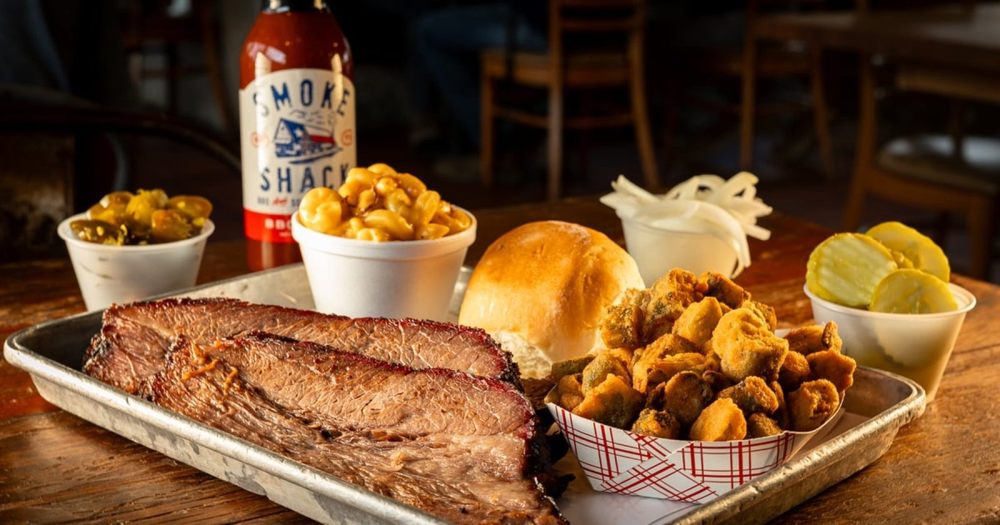

Brisket & ribs
Brisket marbled or lean, and ribs in a good rub. Real smoke, real flavor.


BBQ + Southern Kitchen · San Antonio, TX
Brisket, ribs, fried okra and brisket mac and cheese. Portions big enough for tomorrow.
On the tray
Brisket, ribs, sliders and the sides.
Brisket marbled or lean, and ribs in a good rub. Real smoke, real flavor.
Sliders with two sides, brisket sandwiches and pulled pork, for dine-in, pickup or delivery.

Brisket mac and cheese, fried okra, beans, coleslaw and banana pudding.


4.34943 Google reviews
Good BBQ. The brisket and ribs were tasty. We liked the rub. I feel like the meat had been cut for a while but it didn't detract from the taste. As everyone seems to rave about the brisket Mac and Cheese...they are on point. Its absolutely delicious. So we're the beans, okra and coleslaw, although I felt it needed a bit more of the delicious vinegar marinade. Even the rolls were good.
Outstanding Food & Exceptional Service from Smoke Shack on Broadway! We had the pleasure of working with Smoke Shack on Broadway for a catered holiday meal for our company that proudly supports veterans, and I cannot say enough amazing things about this experience. Their catering division is truly top notch from start to finish.
Food: Brisket, fried okra, Mac and Cheese filled with brisket, and ribs 😋🤤. EVERYTHING I just mentioned was fresh, delicious, and ON POINT and I had enough food left over for dinner and a little leftover for the next day. I definitely got my money’s worth. I went there after reading the reviews and having a taste for barbecue chicken.

Our story
Brisket, ribs, brisket sandwiches, mac and cheese and banana pudding. Dine in, pick up or have it delivered.
Order brisket marbled or lean. The Shack Mac piles extra brisket and our house made BBQ sauce on mac and cheese.
Catering is a big part of what we do. We build the menu around your group's needs.
Visit
3714 Broadway, San Antonio, TX 78209
Right across from the Witte Museum. Sunday and holiday hours can differ, so call ahead.